NUMBERS
Exercise 1.1
1) (i) 10,00,000 (ii) 9,99,99,999 (iii) Five Thousand (iv) 7000000+600000+70000+900+5
2) (i) False (ii) False (iii) True (iv) False
3) 10 4) (i) 70,00,000 (ii) 7,000,000
5) (i) 347,056 (ii) 7,345,671 (iii) 634,567,105 (iv) 1,234,567,890
6) Indian System : 9,99,999 (Nine Lakh Ninety Nine Thousand Nine Hundred Ninety Nine)
International System : 999,999 (Nine Hundred Ninety Nine Thousand, Nine Hundred Nintey Nine)
7) (i) Seventy five lakh thirty two thousand one hundred five
(ii) Nine crore seventy five lakh sixty three thousand four hundred fifty three
8) (i) Three hundred forty five thousand six hundred seventy eight
(ii) Eight million three hundred forty three thousand seven hundred ten
(iii) One hundred three million four hundred fifty six thousand seven hundred eighty nine
9) (i) 2,30,51,980 (ii) 66,345,027 (iii) 789,213,456 10) 26,345
11) 1,000,000 (One million)
Objective Type Questions
12) (b) 10000001 13) (c) 2 14) (a) 100 Crore
15) (d) \(6 \times 100000 + 7 \times 10000 + 0 \times 1000 + 9 \times 100 + 0 \times 10 + 5 \times 1\)
Exercise 1.2
1) (i) \(48792 < 48972\) (ii) \(1248654 > 1246854\) (iii) \(658794 = 658794\)
2) (i) False (ii) False (iii) True
3) The greatest number is 1386787215
The smallest number is 86720560
4) \(128435 > 25840 > 21354 > 10835 > 6348\)
5) 76095321, 86593214 (Similarly, we can write many numbers)
6) 479, 497, 749, 794, 947, 974 7) 4698
8) The smallest Postal Index Number is 631036
The largest Postal Index Number is 631630
9) (i) Aanaimudi (ii) Aanaimudi > Dottabetta > Velliangiri > Mahendragiri
(iii) 1048 m
Objective Type Questions
10) (c) 134205, 134208, 154203 11) (a) 1489000 and 1492540 12) (d) 26
Exercise 1.3
1) (i) 360 (ii) 150 (iii) 1 2) (i) False (ii) True (iii) False 3) 11910
4) 2,15,750 5) 39,000 bicycles 6) ₹ 2500 7) (i) 9 (ii) 11 (ii) 107
8) (d) 1 9) (b) 12 10) (c) \(\times\)
Exercise 1.4
1) (i) 800 (ii) 1000 (iii) 90,000 2) (i) False (ii) True (iii) False
3) (i) 4100 (ii) 45,000 (iii) 90,000 (iv) 51,00,000 (v) 30,00,00,000
4) 1,90,000 5) (i) 12,300 (ii) 18,99,600 6) 3,37,000
Objective Type Questions
7) (b) 10855 8) (c) 76800 9) (a) 9800000 10) (b) 165000
Exercise 1.5
1) (i) 1 (ii) 34 (iii) 0 (iv) Zero (v) one
2) (i) False (ii) False (iii) True (iv) True (v) True
3) (i) Commutativity for Addition (ii) Associativity for Multiplication
(iii) Zero is Additive Identity (iv) One is Multiplicative Identity
(v) Distributivity of Multiplication over Addition
4) (i) 5100 (ii) 3,00,000 (iii) 13,200 (iv) 334
Objective Type Questions
5) (b) 0 6) (d) 59 7) (a) an even number
8) (b) 0 9) (c) \(2 + 0\) 10) (c) \(4237 + 5498 \times 3439 = (4237 + 5498) \times 3439\)
Exercise 1.6
1) 87543
2) Ascending Order : \(6,85,48,437 < 7,21,47,030 < 7,26,26,809 < 9,12,76,115\)
Descending Order: \(9,12,76,115 > 7,26,26,809 > 7,21,47,030 > 6,85,48,437\)
3) (i) 1706 tigers in 2011 (ii) 2100 (iii) 520 tigers increased from 2011 to 2014
4) among 6 friends, each of them get 37 apples. 3 apples left over
5) \(515 + 1 = 516\) trays required
6) (i) Indian System: Two crore fifty nine lakh forty one thousand nine hundred
International System : Twenty five million nine hundred forty one thousand nine hundred
(ii) 5,50,500 (iii) Eighty six crore forty lakh seven hundred thirty
(iv) Ninteen million eight hundred eighty eight thousand eight hundred
(v) Indian System : 60,53,100 - Sixty lakh fifty three thousand one hundred
International System : 6,053,100 - Six million fifty three thousand one hundred
7) One of the answers is 43781. Many answers are possible
8) (i) 85 rows are required to fill 7650 chairs (ii) The remaining chairs are 39
9) Yes, both are same (30,00,000) 10) Relevant answers are yours
ALGEBRA
Exercise 2.1
1) (i) Variables (ii) \(f - 5\) (iii) \(\frac{s}{5}\) (iv) \(n - 7\) (v) 17
2) (i) False (ii) True (iii) False (iv) True (v) True
3)
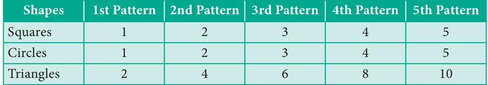
4) Arivazhagan's age is '\(n - 30\)' 5) (i) \(u + 2\) (ii) \(u - 2\)
6) (i) \(t + 100\) (ii) \(4q\) (iii) \(9y - 4\)
7) (i) \(x\) divided by 3 (ii) 11 added to 10 times \(x\) (iii) product of 70 and \(s\)
8) Vetri's answer is correct 9) (i) 299; 301 (ii) 18
10)
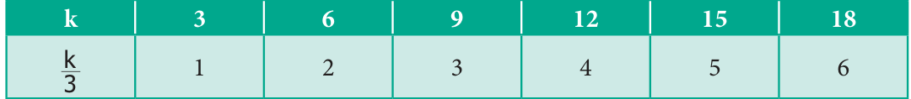
The value of '\(k\)' is 15.
Objective Type Questions
11) c) can take different values 12) d) \(7w\) 13) d) 22
14) b) \(y = 6\) 15) a) \(n - 6 = 8\)
Exercise 2.2
1) 8; 77; 666; 5555; 44444; 333333 2) (i) \(4s\) (ii) \(3s\)
3)
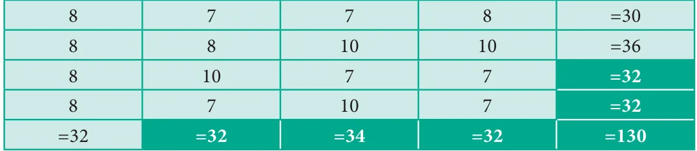
4) \(k = 3\); \(m = 1\); \(n = 10\); \(a = 9\); \(b = 6\); \(c = 4\); \(x = 4\); \(y = 9\).
5) 19
6) (i) \(P = 2\); \(Q = 8\); \(R = 6\); \(S = 10\)
(ii)
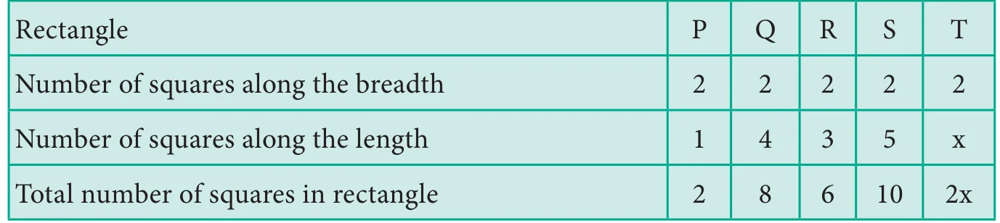
7)
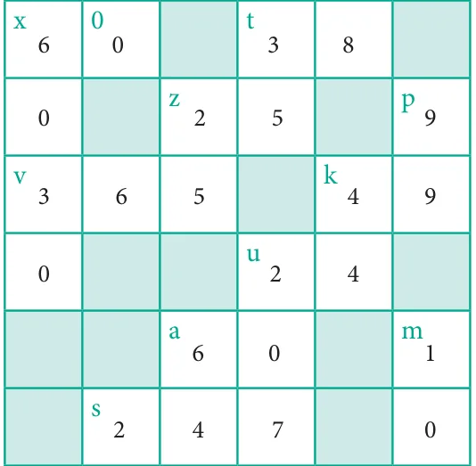
RATIO AND PROPORTION
Exercise 3.1
1) (i) 3 : 5 (ii) 3 : 2 (iii) 25 : 2 (iv) 3 : 8 2) (i) True (ii) False
3) (i) 3 : 4 (ii) 4 : 3 (iii) 7 : 15 (iv) 4 : 9 (v) 3 : 4 4) 5 : 3 5) 1 : 3
6) (i) 3 : 5 (ii) 2 : 5 (iii) 3 : 2 7) (d) 5 : 1 8) (c) 20 : 1 9) (d) 10 : 7
10. (b) 3 : 4 11. (c) 5 : 1
Exercise 3.2
1) (i) 15 (ii) 8 (iii) 12 2) (i) 36 inches, 6 Feet (ii) 14 days, 9 weeks
3) (i) False (ii) True 4) (i) 6 : 4, 9 : 6 (ii) 2 : 12, 3 : 18 (iii) 10 : 8, 15 : 12
5) (i) 4 : 5 is larger than 8 : 15 (ii) 7 : 8 is larger 3 : 4 (iii) 2 : 1 is larger than 1 : 2
6) (i) 12, 8 (ii) 12, 15 (iii) 12, 28 7) (i) Rs.2400 (ii) Rs.1600
8) 21 cm, 42 cm 9) (a) 6 10) (d) 12 : 21 11) (d) 20/28 12) (c) Rs.1000
Exercise 3.3
1) (i) 12 (ii) 9 (iii) 4; 12 (iv) 24; 2 2) (i) False (ii) False (iii) True (iv) False
3) (i) Rs.30 (ii) 25 days 4) Yes, 12:24, 18:36
5) (i) Yes, Extreme values – 78, 20; Inbetween values – 130, 12
(ii) No, Extreme values – 400, 625; Inbetween values – 50, 25
6) Yes 7) 80 Pages 8) 2 km 9) 44 points
10) Asif's run rate is better 11) My friend's rate of purchase is better than me.
Objective Type Questions
12) (c) 2 : 5 , 10 : 25 13) (d) 8 14) (c) 35 15) (b) 270 16) (c) 6 km
Exercise 3.4
1) (i) 1 : 4 (ii) 4 : 5 (iii) 1 : 5 (iv) Ratio of elephant to cheetah is least
2) 60 teachers and 6 administrators 3) (i) 2 : 1 (ii) 1 : 3 (iii) 12 ratios
4) A : B = 2 : 1, B : C = 2 : 1; They are in proportion.
5) (a) \(\frac{1}{4}\) cup (b) 8 cups
(c) Ragi flour, Raw rice and water are in one unit, Sesame oil and salt are in different units. these different units cannot be compared and cannot be expressed as a ratio.
6) 2 : 1 7) There are four different ways. 8) Team B has better record
9) The standard 8 is the least ratio
10) The six different answers are : 1 and 90; 2 and 45; 30 and 3; 5 and 18; 6 and 15, 9 and 10.
11) 29 : 44 12) (a) Black balls (b) 96 balls (c) 32 balls, 24 balls
GEOMETRY
Exercise 4.1
1) i) \(\overleftrightarrow{AB}\) ii) \(\overline{BA}\) iii) One 2) 10, \(\overline{PQ}\), \(\overline{PA}\), \(\overline{PB}\), \(\overline{PC}\), \(\overline{AB}\), \(\overline{BC}\), \(\overline{CQ}\), \(\overline{AQ}\), \(\overline{BQ}\), \(\overline{AC}\)
3) \(\overline{XY} = 2.4\text{ cm}\), \(\overline{AB} = 3.4\text{ cm}\), \(\overline{EF} = 4\text{ cm}\), \(\overline{PQ} = 3\text{ cm}\).
5) (i) \(\overleftrightarrow{CD}\) and \(\overleftrightarrow{EF}\), \(\overleftrightarrow{CD}\) and \(\overleftrightarrow{IJ}\), \(\overleftrightarrow{EF}\) and \(\overleftrightarrow{IJ}\)
(ii) \(\overleftrightarrow{AB}\) and \(\overleftrightarrow{CD}\), \(\overleftrightarrow{AB}\) and \(\overleftrightarrow{EF}\), \(\overleftrightarrow{AB}\) and \(\overleftrightarrow{IJ}\), \(\overleftrightarrow{GH}\) and \(\overleftrightarrow{IJ}\), \(\overleftrightarrow{AB}\) and \(\overleftrightarrow{GH}\) (iii) P, Q and R
6) (i) \(l_{3}\) and \(l_{4}\), \(l_{4}\) and \(l_{5}\), \(l_{3}\) and \(l_{5}\)
(ii) \(l_{1}\) and \(l_{2}\), \(l_{1}\) and \(l_{3}\), \(l_{1}\) and \(l_{4}\), \(l_{1}\) and \(l_{5}\), \(l_{2}\) and \(l_{3}\), \(l_{2}\) and \(l_{4}\), \(l_{2}\) and \(l_{5}\)
(iii) \(l_{1}\) and \(l_{2}\) (iv) Q (v) U
Objective Type Questions
7) c) 3 8) d) \(\overline{AB}\)
Exercise 4.2
2) i) D, \(\overrightarrow{DE}\) and \(\overrightarrow{DF}\) ii) D, \(\overrightarrow{DE}\), \(\overrightarrow{DC}\)
3) i), iii), v) are right angles 4) i), ii) and iii) are acute angles
5) i), iii) are obtuse angles
6) i) \(\angle LMN\), \(\angle NML\), \(\angle M\) ii) \(\angle PQR\), \(\angle RQP\), \(\angle Q\)
iii) \(\angle MNO\), \(\angle ONM\), \(\angle N\) iv) \(\angle TAS\), \(\angle SAT\), \(\angle A\)
7) i) True ii) False iii) False iv) True
9) i) Obtuse angle ii) Zero angle iii) Straight angle iv) Acute angle v) Right angle
10) i) \(60^{\circ}\) ii) \(64^{\circ}\) iii) \(5^{\circ}\) iv) \(90^{\circ}\) v) \(0^{\circ}\)
11) i) \(110^{\circ}\) ii) \(145^{\circ}\) iii) \(15^{\circ}\) iv) \(90^{\circ}\) v) \(180^{\circ}\)
12) i) \(155^{\circ}\) ii) \(60^{\circ}\) iii) \(44^{\circ}\) iv) \(113^{\circ}\) 13) b) \(\angle ZXY\) 14) b) \(45^{\circ}\)
Exercise 4.3
1) i) Collinear ii) Non-Collinear iii) Non-Collinear iv) O
2)
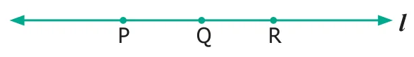
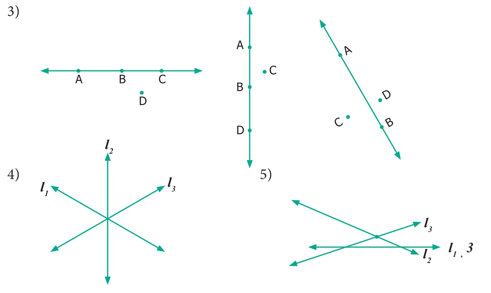
Objective Type Questions
6) b) A, F, C 7) d) A, D, C 8) b) F
Exercise 4.4
1) i) Parallel lines ii) Parallel and Perpendicular lines
iii) Intersecting lines
2)
| Parallel lines | Intersecting Lines |
|---|---|
| \(\overline{AB}\) and \(\overline{DC}\) | \(\overline{AB}\), \(\overline{AE}\), \(\overline{AD}\) |
| \(\overline{AD}\) and \(\overline{BC}\) | \(\overline{DA}\), \(\overline{DH}\), \(\overline{DC}\) |
| \(\overline{DC}\) and \(\overline{HG}\) | \(\overline{CB}\), \(\overline{CG}\), \(\overline{CD}\) |
| \(\overline{AD}\) and \(\overline{EH}\) | \(\overline{HD}\), \(\overline{HG}\), \(\overline{HE}\) |
| \(\overline{AE}\) and \(\overline{DH}\) | \(\overline{EA}\), \(\overline{EH}\)... |
| \(\overline{DH}\) and \(\overline{CG}\) |
3) i) \(\angle 1 = \angle CBD\) or \(\angle DBC\) ii) \(\angle 2 = \angle DBE\) or \(\angle EBD\)
iii) \(\angle 3 = \angle ABE\) or \(\angle EBA\) iv) \(\angle 1 + \angle 2 = \angle CBE\) or \(\angle EBC\)
v) \(\angle 2 + \angle 3 = \angle ABD\) or \(\angle DBA\) vi) \(\angle 1 + \angle 2 + \angle 3 = \angle ABC\) or \(\angle CBA\)
4) i) right angle ii) acute angle iii) straight angle iv) obtuse angle
5) (i) and (iv) are complementary angles (ii) and (iii) are non-complementary angles
6) ii) and iv) are supplementary i) and iii) are not supplementary
7) i) \(\angle FAE\); \(\angle EAD\)
ii) \(\angle FAD\); \(\angle DAC\) \(\angle BAC\); \(\angle CAE\) \(\angle DAB\); \(\angle DAE\) \(\angle FAB\); \(\angle BAC\) \(\angle FAB\); \(\angle FAE\)
8) i) Legs of the table, railway track, edges of the scale
ii) Adjacent sides of a Board, Cross bars of windows, Adjacent sides of the textbook
iii) Cross bars of windows, Ladder, blades of a scissor.
9) \(60^{\circ}\) is twice its complement. 10) \(72^{\circ}\) 11) The two angles are \(80^{\circ}\) and \(100^{\circ}\)
12) Two angles are \(70^{\circ}\) and \(20^{\circ}\). 13) The angles are \(100^{\circ}\) and \(80^{\circ}\).
STATISTICS
Exercise 5.1
1) (i) Data (ii) List of absentees in a class
(iii) Cricket scores gathered from a website (iv)
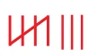
2)
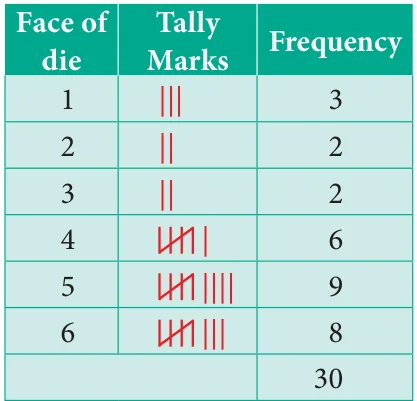
3)
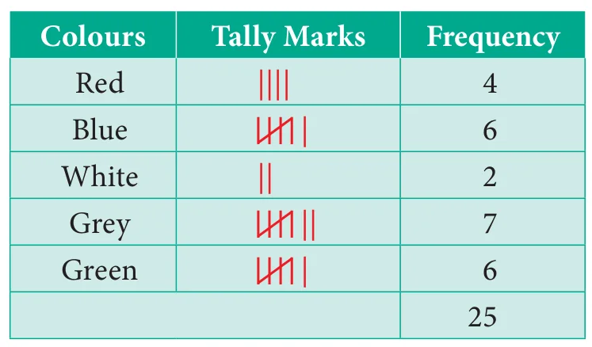
4)
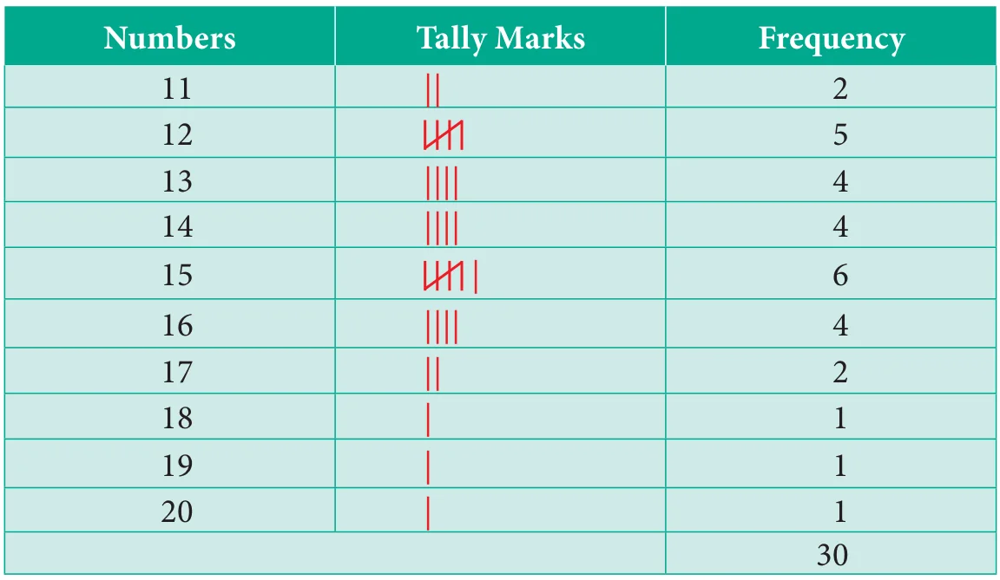
5)
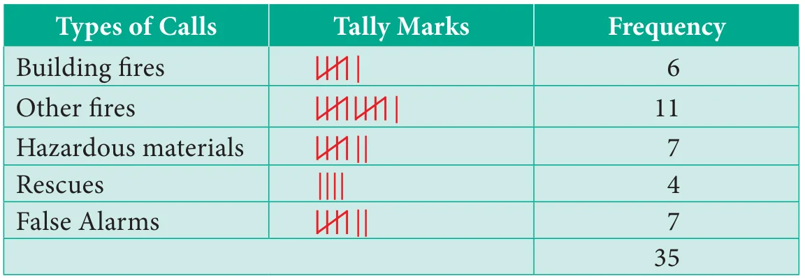
(i) Other fires (ii) Rescues (iii) 35 (iv) 7
6) (b)
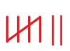
7) (c) 9
Exercise 5.2
1) i) 150 ii)
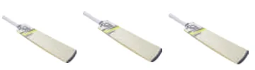
iii) Pictograph
4) i) kabaddi ii) 110 iii) Kho-Kho and Hockey iv) 0 v) Basketball
5) (c) Scaling 6) (b) Pictogram
Exercise 5.3
1) i) 10 ii) Mathematics iii) Language iv) 65% v) English
vi) Mathematics; English
5) (d) Both horizontal bars or vertical bars. 6) (b) are the same
Exercise 5.4
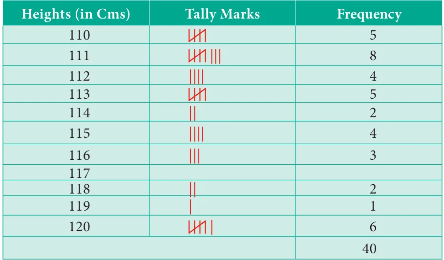
2) i) 5 : 4 ii) 5 : 19 iii) ₹ 300 iv) ₹ 2400 v) true
4) ii) 14 days iii) 24 days iv) 5 : 3
7) i) Novelists ii) Scientists iii) Sportspersons iv) 25 v) 160
INFORMATION PROCESSING
Exercise 6.1
1) 5 combinations are possible, Black - White Black - Blue Black - Red Blue - white Blue - Red
2) 6 possibilities, R - B - R - B R - R - B - B B - R - R - B B - R - B - R B - B - R - R R - B - B - R
(3) One of the answers is,
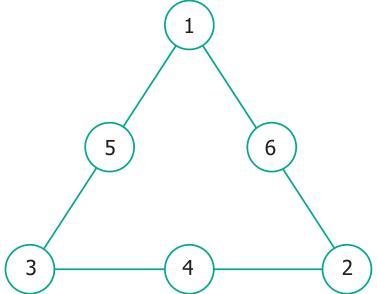
(4) (i) Yes
(ii) 5
(iii) 17, 19, 20, 21, 23
5)
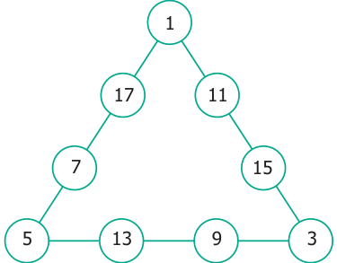
6)
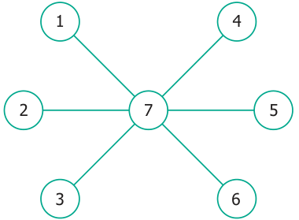
(7) There are many other possible ways.
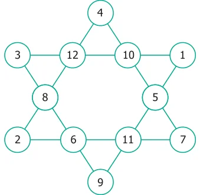
(8) (i) 12 triangles
(ii) 16 triangles
(iii) 32 triangles
(iv) 35 triangles
(9) (i) 55
(ii) 100
(10) (i)
(ii)
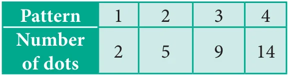
(iii)
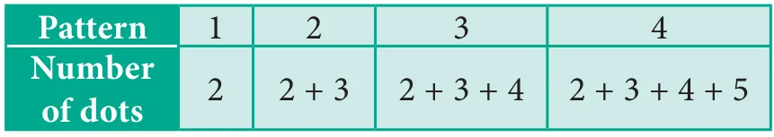
(iv) 350
(11) (i) 20 squares (ii) 10 squares
(12) 7 circles (13) (i) 10 (ii) 12